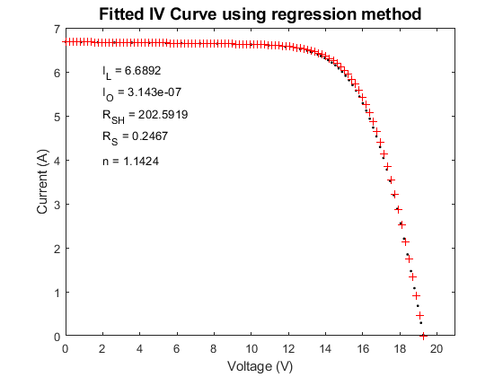

pvl_est_single_diode_param
Uses a regression technique to fit the single diode equation to data for a single IV curve.
Contents
Syntax:
[Io Iph Rs Rsh n] = pvl_est_single_diode_param(I, V, NsVth)
Description
pvl_est_single_diode_param uses a regression technique based on [1] to fit the single diode equation to data for a single IV curve. Although values for each of the five parameters are returned, testing has shown only Rsh to be stable. Values for the parameters Rs, Io and n may be negative or imaginary even for IV curve data without obvious flaws. The method coded here uses a principal component transformation of (V,I) prior to regression to attempt to overcome effects of strong colinearity between V and I over much of the I-V curve.
Inputs
- I - a vector of length N of current for the IV curve. The first value is taken as Isc, the last value must be 0.
- V - a vector of length N of voltage for the IV curve corresponding to the current values in the input vector I. The first value must be 0, the last value is taken as Voc.
- NsVth - the thermal voltage for the module, equal to Ns (number of cells in series) x Vth (thermal voltage per cell).
Outputs
- Io - the dark current value (A) for the IV curve.
- Iph - the light current value (A) for the IV curve.
- Rs - series resistance (ohm) for the IV curve.
- Rsh - shunt resistance (ohm) for the IV curve.
- n - diode (ideality) factor (unitless) for the IV curve.
Example
clearvars % load IV curve data for a 36 cell Mitsubishi cSi module load 'Desoto_demo.mat' % Build structure for constants Const.E0 = 1000; % W/m2 Const.T0 = 25; % C Const.k = 1.38066E-23; % J/K Const.q = 1.60218E-19; % c i = 63; % randomly selected IV curve Vth = Const.k/Const.q*(IVCurves(i).Tc+273.15); % Clean up measured IV curve data [I, V] = pvl_rectify_IV_curve(IVCurves(i).I, IVCurves(i).V, IVCurves(i).Voc, IVCurves(i).Isc); % Estimate 5 parameters for the IV curve [Io, Iph, Rs, Rsh, n] = ... pvl_est_single_diode_param(I, V, Specs.Ns*Vth); % Compute IV curve associated with the 5 parameters Result = pvl_singlediode(Iph, Io, Rs, Rsh, n*Specs.Ns*Vth, 100); figure plot(IVCurves(i).V,IVCurves(i).I,'k.') hold on plot(Result.V,Result.I,'r+') xlabel('Voltage (V)') ylabel('Current (A)') title('Fitted IV Curve using regression method','FontSize',14) xlim([0 21]) ylim([0 7]) text(2,6,['I_L = ' num2str(Iph)]); text(2,5.5,['I_O = ' num2str(Io)]); text(2,5,['R_{SH} = ' num2str(Rsh)]); text(2,4.5,['R_S = ' num2str(Rs)]); text(2,4,['n = ' num2str(n)]); %
Sources
[1] A. Ortiz-Conde, F. Garci'a Sa'nchez, J. Murci, "New method to extract the model parameters of solar cells from the explict analytic solutions of their illuminated I-V characteristics", Solar Energy Materials and Solar Cells 90, pp 352-361, 2006.
[2] C. Hansen, Parameter Estimation for Single Diode Models of Photovoltaic Modules, Sandia National Laboratories Report SAND2015-2065.
See also
pvl_singlediode, pvl_rectify_IV_curve
Copyright 2015 Sandia National Laboratories